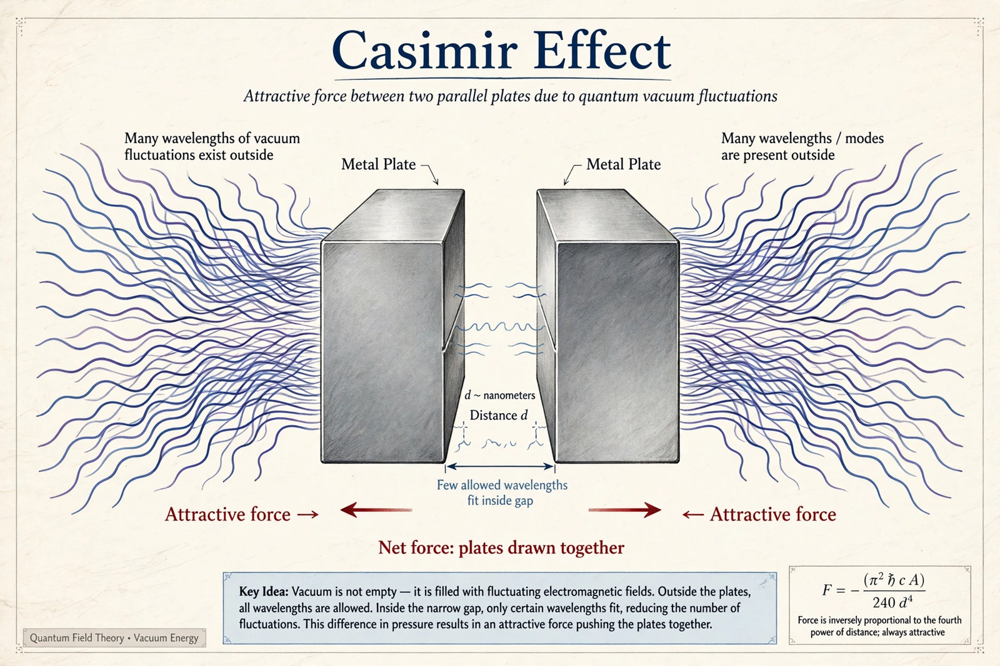

Casimir effect

[Image: Diagram of two uncharged metal plates attracting each other in a vacuum due to restricted vacuum modes]The Casimir effect is a physical force acting on the macroscopic boundaries of a confined space which arises from the quantum fluctuations of an electromagnetic field. Predicted by Dutch physicist Hendrik Casimir in 1948 (working at Philips on colloid chemistry, prompted by a remark of Niels Bohr), it predicts that two uncharged, perfectly conducting plates in a vacuum, a few nanometres to micrometres apart, attract each other with a force growing steeply as the separation shrinks (∝ 1/d⁴).
The standard explanation is that the plates restrict the zero-point fluctuations of the vacuum: only waves fitting between the plates are allowed inside, while all wavelengths exist outside, so outside radiation pressure exceeds inside and pushes the plates together. Measured roughly by Marcus Sparnaay (1958) and precisely by Steven Lamoreaux (1997) and others, the effect is real and now an engineering consideration — and a nuisance — in nanoelectromechanical systems, where it can cause moving parts to stick ('stiction'). The Casimir effect is often cited as evidence that vacuum fluctuations, and hence Quantum field theory's structured vacuum, are physically real.
Related phenomena
Variants include the repulsive Casimir–Lifshitz force in certain fluid-separated materials, the dynamical Casimir effect (photons generated by an accelerating mirror, demonstrated in superconducting circuits in 2011), and Casimir torques aligning anisotropic plates. Cosmologically, the energy of the quantum vacuum is precisely the quantity that appears in the Cosmological constant — whose measured value is absurdly smaller than naive estimates, physics' worst prediction.